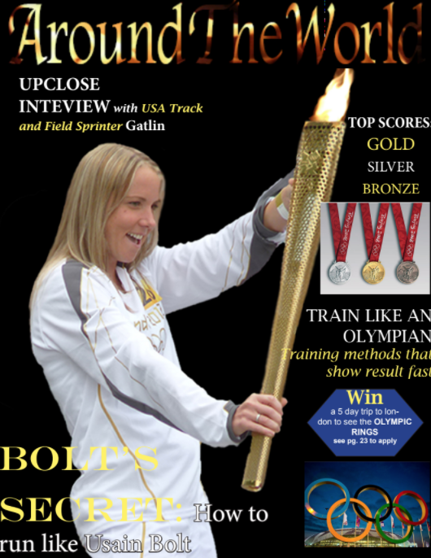
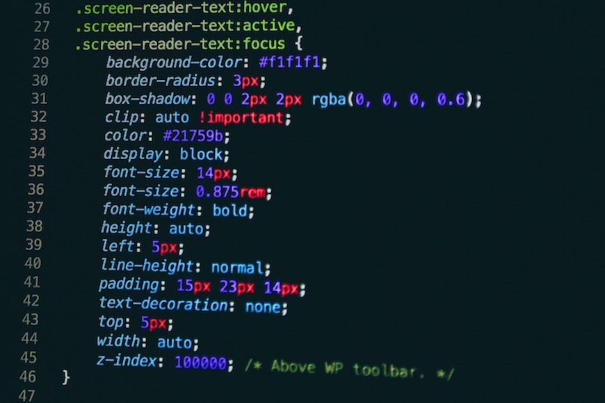
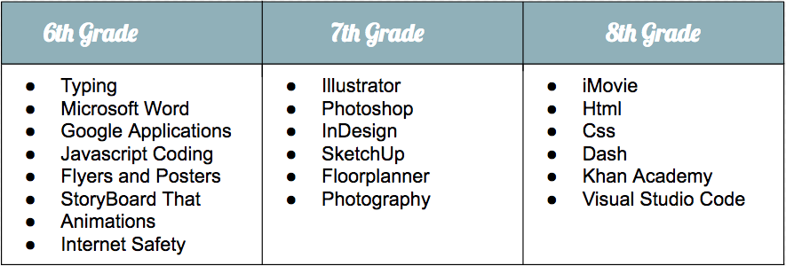

<!doctype html>
<html>
    <head>
        <title>Cade's Website</title>
        <meta charset="utf-8">
        <link href="https://fonts.googleapis.com/css?family=Roboto+Condensed" rel="stylesheet"> 
        <link href="https://fonts.googleapis.com/css?family=Raleway" rel="stylesheet">   
        <link href="https://fonts.googleapis.com/css?family=Lobster" rel="stylesheet">   
        <link href="app.css" rel="stylesheet"/>
    </head>
</html>
<header>
    <br>
    <h1>Cade's Website</h1>
    <br>
    <ul>
        <li><a href="index.html">Home Page</a></li>
        <li><a href="ATM.html">ATM</a></li>
        <li><a href="Future.html">Future</a></li>
        <li><a href="Soccer.html">Soccer</a></li>
    </ul>
</header>
<body>
    <article>
       <h2 id="All-About-Me">ATM</h2>
    </article>

    <article>
        <h2>What is ATM?</h2>
        <p><h3>ATM is a 3 year computer program offered at Bancroft Middle School. It stands for Applied Technology Magnet. In this program, students learn how to use a computer, and figure out how to work different programs. </h3></p>
       
    </article>

    <article>
        <h2>My 6th Grade Year</h2>
        <p><h3>During my first year in Middle School, we began learning slowly. Overtime, I began understanding how to work basic programs. </h3></p>
        <center></center>
    </article>


    <article>
    <h2>My 7th Grade Year</h2>
        <p><h3>My 7th grade year was very eventful. Each program I learned was even more interesting than the last.</h3>
        </p>
        <center></center>
    </article>

    <article>
        <h2>My 8th Grade Year</h2>
        <p><h3>Currently, this year being my last year at Bancroft, I am learning different programs that mainly focus on code.</h3></p>
        <center></center>
    </article>
        
    <article>
        <h2>What I've Learned</h2>
        <center></center>
        <p><h3>This year, I have completed a couple of projects in the program Dash. I coded the sites myself as I was just getting into the basics of coding.</h3></p>
        <ul>        
        <li><a href="https://dash.generalassemb.ly/200810579/build-your-own-personal-website" target="_blank">Dash Project 1</li>

        </ul>
    </article>
       
    <article>
        <h2>Reflection of The Program</h2>
        <p><h3>I am very lucky and grateful that I was able to be included in the ATM program. Having it for 3 years not only taught me new programs and how to use a computer, it gave me the ability to use a computer without problems and get ahead in classes. Being able to know how to work a program or complete an activity that most people would have trouble accessing and doing, benefits my grade and time management. It gives me more time to do other things. ATM has given me a whole new level of understanding that n0t only myself will benefit, but my family will as well. I am very grateful to the ATM program as well as my ATM teachers for this wonderful 3 year experience of understanding.</h3></p>
    </article>
</body>
